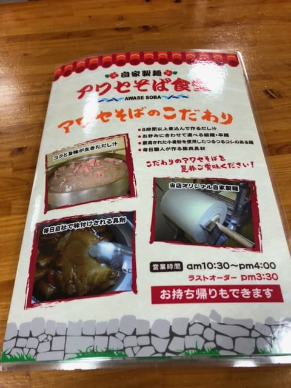
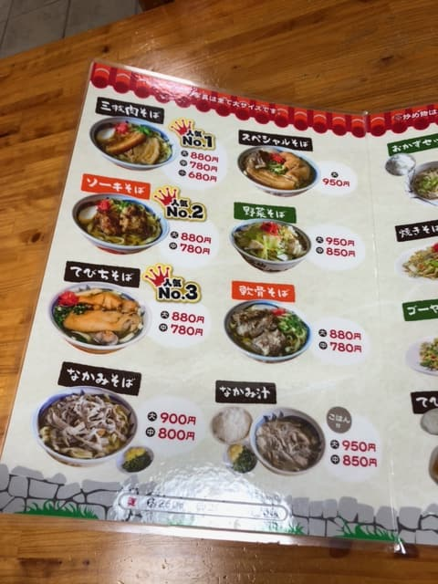
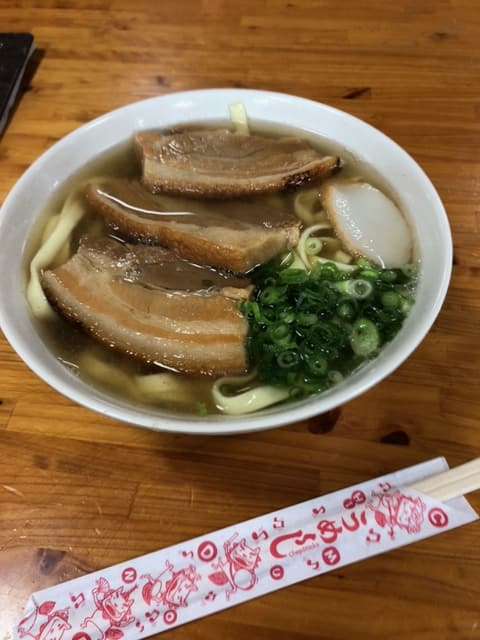

2023年5月吃的😄
周日中午来的，停车场满了(・・) 稍微等了一下，刚好空出一个车位，总算停进去了😊


看了菜单，点了人气No.1的「三层肉面」。面好像可以从宽面和细面中选择，问了店员，店员说「传统的宽面点的人很多」，推荐了宽面，所以就点了宽面。

我一如往常没做任何功课，就去逛自己在意的店，所以一边想着「是柴鱼高汤？」「是猪骨高汤？」一边先喝一口汤😄
喝下去的瞬间「？」一下子分辨不出汤头的基底味道，又喝了一口确认。既能感受到柴鱼高汤的味道，也能感受到猪骨高汤的味道，是至今从没喝过的汤头味道。
到目前为止的冲绳面店，即使是柴鱼和猪骨的综合高汤，一般也是其中一种味道比较强，但阿和濑面食堂两种味道都能感受到，我觉得平衡得非常绝妙。
自家制面的宽面，是偏软的嚼劲。配料的三层肉也很软很好吃😄
评分（9分/15分）：很正常的好吃。汤头能同时感受到柴鱼的味道和猪骨的味道，是其他店没有的汤头。是挤满在地客人的老字号人气店呢。也支援PayPay付款，而且是我第一次在冲绳面店拿到收据，所以我打算用另一篇文章（「【集点活动】把收据变成钱（零钱）的方法（超级积少成多系）」）里的方法把它换成钱😄
面：★★★☆☆（3）
汤头：★★★☆☆（3）
配料：★★★☆☆（3）